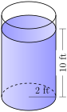
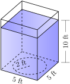
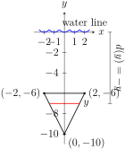
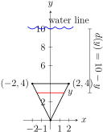

Section 7.6 Fluid Forces
In the unfortunate situation of a car driving into a body of water, the conventional wisdom is that the water pressure on the doors will quickly be so great that they will be effectively unopenable. (Survival techniques suggest immediately opening the door, rolling down or breaking the window, or waiting until the water fills up the interior at which point the pressure is equalized and the door will open. See Mythbusters episode #72 to watch Adam Savage test these options.)
How can this be true? How much force does it take to open the door of a submerged car? In this section we will find the answer to this question by examining the forces exerted by fluids.
We start with pressure, which is related to force by the following equations:
In the context of fluids, we have the following definition.
Definition 7.6.1. Fluid Pressure.
Let \(w\) be the weight-density of a fluid. The pressure \(p\) exerted on an object at depth \(d\) in the fluid is \(p = w\cdot d\text{.}\)
We use this definition to find the force exerted on a horizontal sheet by considering the sheet's area.
Example 7.6.2. Computing fluid force.
-
A cylindrical storage tank has a radius of 2 ft and holds 10 ft of a fluid with a weight-density of 50 lb⁄ft3. (See Figure 7.6.3.) What is the force exerted on the base of the cylinder by the fluid?
Figure 7.6.3. A cylindrical tank in Example 7.6.2 -
A rectangular tank whose base is a 5 ft square has a circular hatch at the bottom with a radius of 2 ft. The tank holds 10 ft of a fluid with a weight-density of 50 lb⁄ft3. (See Figure 7.6.4.) What is the force exerted on the hatch by the fluid?
Figure 7.6.4. A rectangular tank in Example 7.6.2
-
Using Definition 7.6.1, we calculate that the pressure exerted on the cylinder's base is \(w\cdot d = \)50 lb⁄ft3 ×10 ft\(=\)500 lb⁄ft2. The area of the base is \(\pi\cdot 2^2 = 4\pi\) ft2. So the force exerted by the fluid is
\begin{equation*} F = 500\times 4\pi = 6283\,\text{lb}\text{.} \end{equation*}Note that we effectively just computed the weight of the fluid in the tank.
The dimensions of the tank in this problem are irrelevant. All we are concerned with are the dimensions of the hatch and the depth of the fluid. Since the dimensions of the hatch are the same as the base of the tank in the previous part of this example, as is the depth, we see that the fluid force is the same. That is, \(F = 6283\) lb. A key concept to understand here is that we are effectively measuring the weight of a 10 ft column of water above the hatch. The size of the tank holding the fluid does not matter.
The previous example demonstrates that computing the force exerted on a horizontally oriented plate is relatively easy to compute. What about a vertically oriented plate? For instance, suppose we have a circular porthole located on the side of a submarine. How do we compute the fluid force exerted on it?
Pascal's Principle states that the pressure exerted by a fluid at a depth is equal in all directions. Thus the pressure on any portion of a plate that is 1 ft below the surface of water is the same no matter how the plate is oriented. (Thus a hollow cube submerged at a great depth will not simply be “crushed” from above, but the sides will also crumple in. The fluid will exert force on all sides of the cube.)
So consider a vertically oriented plate as shown in Figure 7.6.5 submerged in a fluid with weight-density \(w\text{.}\) What is the total fluid force exerted on this plate? We find this force by first approximating the force on small horizontal strips.
Let the top of the plate be at depth \(b\) and let the bottom be at depth \(a\text{.}\) (For now we assume that surface of the fluid is at depth 0, so if the bottom of the plate is 3 ft under the surface, we have \(a=-3\text{.}\) We will come back to this later.) We partition the interval \([a,b]\) into \(n\) subintervals
with the \(i\)th subinterval having length \(\Delta y_i\text{.}\) The force \(F_i\) exerted on the plate in the \(i\)th subinterval is \(F_i = \text{Pressure} \times \text{Area}\text{.}\)
The pressure is depth times the weight density \(w\text{.}\) We approximate the depth of this thin strip by choosing any value \(d_i\) in \([y_{i-1},y_{i}]\text{;}\) the depth is approximately \(-d_i\text{.}\) (Our convention has \(d_i\) being a negative number, so \(-d_i\) is positive.) For convenience, we let \(d_i\) be an endpoint of the subinterval; we let \(d_i = y_i\text{.}\)
The area of the thin strip is approximately length × width. The width is \(\Delta y_i\text{.}\) The length is a function of some \(y\)-value \(c_i\) in the \(i\)th subinterval. We state the length is \(\ell(c_i)\text{.}\) Thus
To approximate the total force, we add up the approximate forces on each of the \(n\) thin strips:
This is, of course, another Riemann Sum. We can find the exact force by taking a limit as the subinterval lengths go to \(0\text{;}\) we evaluate this limit with a definite integral.
Key Idea 7.6.6. Fluid Force on a Vertically Oriented Plate.
Let a vertically oriented plate be submerged in a fluid with weight-density \(w\text{,}\) where the top of the plate is at \(y=b\) and the bottom is at \(y=a\text{.}\) Let \(\ell(y)\) be the length of the plate at \(y\text{.}\)
-
If \(y=0\) corresponds to the surface of the fluid, then the force exerted on the plate by the fluid is
\begin{equation*} F=\int_a^b w\cdot(-y)\cdot\ell(y)\, dy\text{.} \end{equation*} -
In general, let \(d(y)\) represent the distance between the surface of the fluid and the plate at \(y\text{.}\) Then the force exerted on the plate by the fluid is
\begin{equation*} F=\int_a^b w\cdot d(y)\cdot\ell(y)\, dy\text{.} \end{equation*}
Example 7.6.7. Finding fluid force.
Consider a thin plate in the shape of an isosceles triangle as shown in Figure 7.6.8, submerged in water with a weight-density of 62.4 lb⁄ft3. If the bottom of the plate is 10 ft below the surface of the water, what is the total fluid force exerted on this plate?
We approach this problem in two different ways to illustrate the different ways Key Idea 7.6.6 can be implemented. First we will let \(y=0\) represent the surface of the water, then we will consider an alternate convention.
-
We let \(y=0\) represent the surface of the water; therefore the bottom of the plate is at \(y=-10\text{.}\) We center the triangle on the \(y\)-axis as shown in Figure 7.6.9. The depth of the plate at \(y\) is \(-y\) as indicated by the Key Idea. We now consider the length of the plate at \(y\text{.}\) We need to find equations of the left and right edges of the plate. The right hand side is a line that connects the points \((0,-10)\) and \((2,-6)\text{:}\) that line has equation \(x=1/2(y+10)\text{.}\) (Find the equation in the familiar \(y=mx+b\) format and solve for \(x\text{.}\)) Likewise, the left hand side is described by the line \(x=-1/2(y+10)\text{.}\) The total length is the distance between these two lines: \(\ell(y)=1/2(y+10) - (-1/2(y+10)) = y+10\text{.}\)
Figure 7.6.9. Sketching the triangular plate in Example 7.6.7 with the convention that the water level is at \(y=0\) The total fluid force is then:
\begin{align*} F \amp = \int_{-10}^{-6} 62.4(-y)(y+10)\, dy\\ \amp = 62.4\cdot \frac{176}{3} \approx 3660.8\,\text{lb} \text{.} \end{align*} -
Sometimes it seems easier to orient the thin plate nearer the origin. For instance, consider the convention that the bottom of the triangular plate is at \((0,0)\text{,}\) as shown in Figure 7.6.10. The equations of the left and right hand sides are easy to find. They are \(y=2x\) and \(y=-2x\text{,}\) respectively, which we rewrite as \(x= 1/2y\) and \(x=-1/2y\text{.}\) Thus the length function is \(\ell(y) = 1/2y-(-1/2y) = y\text{.}\)
Figure 7.6.10. Sketching the triangular plate in Example 7.6.7 with the convention that the base of the triangle is at \((0,0)\) As the surface of the water is 10 ft above the base of the plate, we have that the surface of the water is at \(y=10\text{.}\) Thus the depth function is the distance between \(y=10\) and \(y\text{;}\) \(d(y) = 10-y\text{.}\) We compute the total fluid force as:
\begin{align*} F \amp =\int_0^4 62.4(10-y)(y)\, dy\\ \amp \approx 3660.8\,\text{lb}\text{.} \end{align*}
The correct answer is, of course, independent of the placement of the plate in the coordinate plane as long as we are consistent.
Example 7.6.11. Finding fluid force.
Find the total fluid force on a car door submerged up to the bottom of its window in water, where the car door is a rectangle 40 in long and 27 in high (based on the dimensions of a 2005 Fiat Grande Punto.)
The car door, as a rectangle, is drawn in Figure 7.6.12. Its length is \(10/3\) ft and its height is 2.25 ft. We adopt the convention that the top of the door is at the surface of the water, both of which are at \(y=0\text{.}\) Using the weight-density of water of 62.4 lb⁄ft3, we have the total force as
Most adults would find it very difficult to apply over 500 lb of force to a car door while seated inside, making the door effectively impossible to open. This is counter-intuitive as most assume that the door would be relatively easy to open. The truth is that it is not, hence the survival tips mentioned at the beginning of this section.
Example 7.6.13. Finding fluid force.
An underwater observation tower is being built with circular viewing portholes enabling visitors to see underwater life. Each vertically oriented porthole is to have a 3 ft diameter whose center is to be located 50 ft underwater. Find the total fluid force exerted on each porthole. Also, compute the fluid force on a horizontally oriented porthole that is under 50 ft of water.
We place the center of the porthole at the origin, meaning the surface of the water is at \(y=50\) and the depth function will be \(d(y)=50-y\text{;}\) see Figure 7.6.14
The equation of a circle with a radius of 1.5 is \(x^2+y^2=2.25\text{;}\) solving for \(x\) we have \(x=\pm \sqrt{2.25-y^2}\text{,}\) where the positive square root corresponds to the right side of the circle and the negative square root corresponds to the left side of the circle. Thus the length function at depth \(y\) is \(\ell(y) = 2\sqrt{2.25-y^2}\text{.}\) Integrating on \([-1.5,1.5]\) we have:
The second integral above can be evaluated using substitution. Let \(u=2.25-y^2\) with \(du = -2y\,dy\text{.}\) The new bounds are: \(u(-1.5)=0\) and \(u(1.5)=0\text{;}\) the new integral will integrate from \(u=0\) to \(u=0\text{,}\) hence the integral is 0.
The first integral above finds the area of half a circle of radius 1.5, thus the first integral evaluates to \(6240\cdot\pi\cdot1.5^2/2 = 22,054\text{.}\) Thus the total fluid force on a vertically oriented porthole is 22,054 lb.
Finding the force on a horizontally oriented porthole is more straightforward:
That these two forces are equal is not coincidental; it turns out that the fluid force applied to a vertically oriented circle whose center is at depth \(d\) is the same as force applied to a horizontally oriented circle at depth \(d\text{.}\)
We end this chapter with a reminder of the true skills meant to be developed here. We are not truly concerned with an ability to find fluid forces or the volumes of solids of revolution. Work done by a variable force is important, though measuring the work done in pulling a rope up a cliff is probably not.
What we are actually concerned with is the ability to solve certain problems by first approximating the solution, then refining the approximation, then recognizing if/when this refining process results in a definite integral through a limit. Knowing the formulas found inside the special boxes within this chapter is beneficial as it helps solve problems found in the exercises, and other mathematical skills are strengthened by properly applying these formulas. However, more importantly, understand how each of these formulas was constructed. Each is the result of a summation of approximations; each summation was a Riemann sum, allowing us to take a limit and find the exact answer through a definite integral.
The next chapter addresses an entirely different topic: sequences and series. In short, a sequence is a list of numbers, where a series is the summation of a list of numbers. These seemingly-simple ideas lead to very powerful mathematics.
Exercises Exercises
Terms and Concepts
1.
State in your own words Pascal's Principle.
2.
State in your own words how pressure is different from force.
Problems
Exercise Group.
In the following exercises, find the fluid force exerted on the given plate, submerged in water with a weight density of 62.4 lb⁄ft3.
3.
4.
5.
6.
7.
8.
9.
10.
11.
12.
Exercise Group.
In the following exercises, the side of a container is pictured. Find the fluid force exerted on this plate when the container is full of:
water, with a weight density of 62.4 lb⁄ft3, and
concrete, with a weight density of 150 lb⁄ft3.
13.

14.
15.
16.
17.
18.
19.
How deep must the center of a vertically oriented circular plate with a radius of 1 ft be submerged in water, with a weight density of 62.4 lb⁄ft3, for the fluid force on the plate to reach 1,000 lb?
20.
How deep must the center of a vertically oriented square plate with a side length of 2 ft be submerged in water, with a weight density of 62.4 lb⁄ft3, for the fluid force on the plate to reach 1,000 lb?